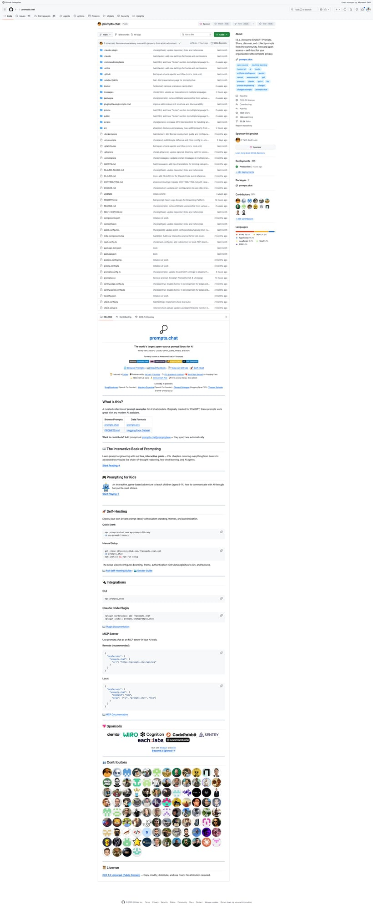
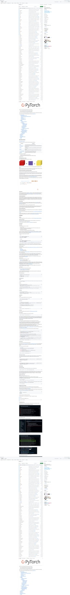
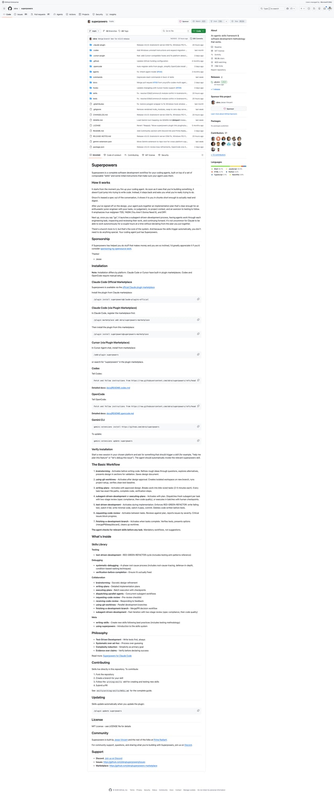
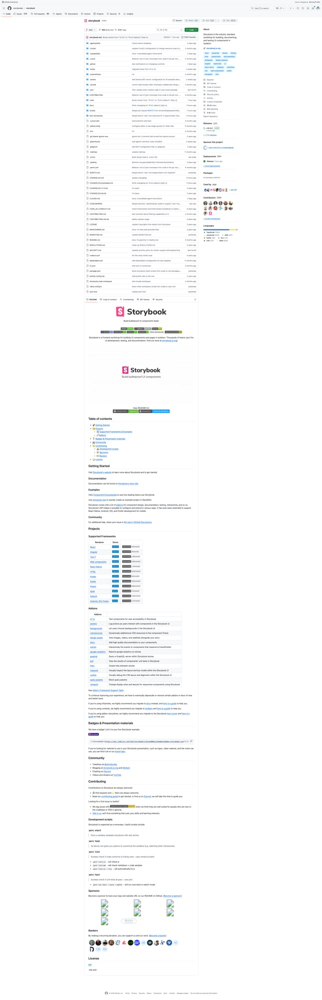
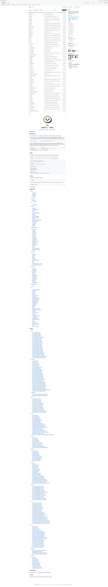

5个Agent Skills新星速报！Metal Kernel、并行Agent调度、Bun JSC绑定等底层技能
Neo整理
Agent Skills 是 AI 编程助手（Claude Code、Codex、Gemini CLI 等）的可复用能力模块。今天我扫描了 SkillsMP 等平台，筛选出来自知名开源项目、深入底层实现的热门 Skills。
本期介绍 5 个精选 Skills，涵盖 GPU 内核开发、并行 Agent 调度、JS 运行时绑定、UI 框架升级、Prompt 生态等领域。今天偏硬核！
Widget Generator：prompts.chat 插件生成器
Widget Generator Skill 来自全球最大的 AI Prompt 开源库 prompts.chat（153k+ Stars），可以为其 Feed 系统生成可定制的 Widget 插件。这意味着你可以用 AI 助手直接为 Prompt 平台开发扩展组件。
💡 核心价值：prompts.chat 不仅是 Prompt 库，还在构建一个完整的插件生态。Widget Generator 让开发者可以快速创建自定义展示组件，扩展平台能力。
技能亮点：
- 全球最大 Prompt 库 — 153k Stars，Windsurf 原生集成
- 插件化架构 — Feed 系统支持自定义 Widget
- MCP 集成 — 可作为 MCP Server 在任何 AI 工具中使用
- Claude Code Plugin — 直接在 Claude Code 中搜索和使用 Prompt
# Claude Code 集成
/plugin marketplace add f/prompts.chat
# MCP Server 模式
npx prompts-chat-mcp
# CLI 使用
npx prompts.chat search "code review"
Metal Kernel：为 PyTorch 编写 Apple Silicon GPU 内核
Metal Kernel Skill 是 PyTorch 官方提供的 Metal/MPS 内核开发指南。当你需要为 Apple Silicon（M1/M2/M3/M4）实现原生 GPU 运算符时，这个 Skill 会指导你完成从 dispatch 注册到 Metal shader 实现的完整流程。
💡 核心价值：PyTorch 正在从 MPSGraph 迁移到原生 Metal，这个 Skill 是迁移的权威指南。原生 Metal 内核提供更好的控制、性能和可维护性。
开发流程：
- Step 1 — 在
native_functions.yaml中注册 MPS dispatch - Step 2 — 在
kernels/中实现 Metal shader（.metal） - Step 3 — 在
operations/中实现 host-side stub（.mm） - Step 4 — 移除
common_mps.py中的 skip/xfail
# Metal Kernel 模式（一元运算）
struct my_op_functor {
template <typename T>
inline T operator()(const T x) {
return precise::exp(x);
}
};
REGISTER_UNARY_OP(my_op, float, float);
REGISTER_UNARY_OP(my_op, half, half);
# 编译验证
cd build && ninja torch_cpu
# 运行测试
python test/test_mps.py -k test_output_match_my_op
Dispatching Parallel Agents：并行 Agent 调度框架
Dispatching Parallel Agents Skill 来自 Superpowers 项目（一套完整的软件开发方法论框架），教你如何将多个独立任务分发给并行 Agent 处理。当面对 2+ 个无共享状态的独立任务时自动激活。
💡 核心价值：3 个问题同时解决 vs 依次解决 — 并行调度让你用 1 个任务的时间完成 3 个。核心原则：每个独立问题域派遣一个 Agent。
调度模式：
- 识别独立域 — 按"什么坏了"分组，互不依赖
- 创建聚焦任务 — 每个 Agent 得到具体范围、清晰目标、约束条件
- 并行派遣 — 所有 Agent 同时启动
- 审核整合 — 检查冲突，运行全套测试
# 何时使用
✅ 3+ 测试文件因不同根因失败
✅ 多个子系统独立故障
✅ 每个问题无需其他问题的上下文
# 何时不使用
❌ 故障相关（修一个可能修所有）
❌ 需要全局系统状态
❌ Agent 会互相干扰（编辑同一文件）
# 实战效果（来自真实调试）
6 个测试失败 → 3 个 Agent 并行 → 零冲突 → 全部通过
Storybook Upgrade：组件库版本升级指南
Storybook Upgrade Skill 是 Storybook 官方提供的版本升级指南。Storybook 是最流行的 UI 组件开发和测试工具（89.5k Stars），这个 Skill 确保你正确升级所有 @storybook/* 包。
💡 核心价值：永远不要手动 npm add @storybook/xxx！统一用 npx storybook@<version> upgrade 保持所有包版本同步。每次只升一个大版本。
关键规则：
- 唯一命令 —
npx storybook@<version> upgrade - 逐级升级 — 8.x → 9.x → 10.x，不跳版本
- 自动处理 — 检测所有 @storybook/* 包，统一升级
- 多包管理器 — 支持 npm、yarn、pnpm
# 升级到 canary 版本（测试 PR）
npx storybook@0.0.0-pr-33526-sha-a2e09fa2 upgrade
# 升级到最新稳定版
npx storybook@latest upgrade
# 升级到指定版本
npx storybook@8.5.0 upgrade
# ⚠️ 禁止操作
npm add @storybook/react # ❌ 绝对不要这样做！
JSC Classes Zig：Bun 的 JavaScript-Zig 桥接
Implementing JSC Classes Zig Skill 来自 Bun 运行时（88.2k Stars），教你如何使用 Bun 的 Zig 绑定生成器创建 JavaScript 类。当你需要在 Zig 中实现新的 JS API 并与 JavaScriptCore 集成时使用。
💡 核心价值：Bun 用 Zig 实现高性能 JS API，这个 Skill 展示了 .classes.ts 定义 → Zig 实现 → C++ 生成代码的完整桥接架构。理解这个流程就理解了 Bun 的核心设计。
架构三层：
- .classes.ts — 定义 JS 接口（属性、方法、构造函数）
- .zig — 实现逻辑（内存管理、错误处理、GC 集成）
- Generated C++ — 自动生成的 JSC 绑定胶水代码
# 1. 定义接口（.classes.ts）
define({
name: "TextDecoder",
constructor: true,
finalize: true,
proto: {
decode: { args: 1 },
encoding: { getter: true, cache: true },
},
});
# 2. Zig 实现
pub fn constructor(globalObject: *JSGlobalObject,
callFrame: *JSC.CallFrame) bun.JSError!*TextDecoder {
return bun.new(TextDecoder, .{ .encoding = "utf-8" });
}
# 3. 注册到 generated_classes_list.zig
总结
今天的 5 个 Skills 偏向底层实现和工程方法论，来自 PyTorch、Bun、Storybook、Superpowers 等一线项目：
- GPU 内核开发 — Metal Kernel（PyTorch Apple Silicon 原生支持）
- 运行时桥接 — JSC Classes Zig（Bun 的 JS-Zig 绑定架构）
- Agent 编排 — Dispatching Parallel Agents（并行调度方法论）
- 框架升级 — Storybook Upgrade（安全版本迁移）
- Prompt 生态 — Widget Generator（prompts.chat 插件化）
Agent Skills 不只是"让 AI 写代码"，更是将项目特有的工程知识编码为可复用模块。Metal Kernel Skill 让 AI 能写 GPU 内核，Parallel Agents Skill 让 AI 学会并行调度——这些都是 Skills 生态真正有价值的方向。